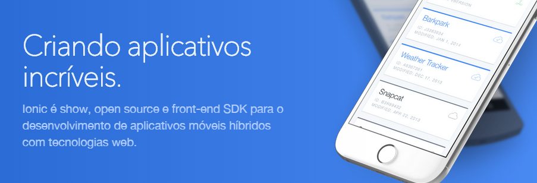

Testar um aplicativo implementado em Ionic não é uma tarefa difícil, pois o próprio framework já dispõe de recursos em seu CLI para nos ajudar nessa tarefa.
Mas só este teste não é o suficiente e em muitos casos não é útil, por exemplo no caso de um app que usa sensores e câmera.
Vou destacar aqui o cenário que uso para testar meus apps e quais cuidados tomar.
Quais as opções?
A primeira é o emulador que vem com o Android SDK, já te adianto que essa é a pior opção. Ele já é lento por natureza, porem você pode melhorar um pouco a performance usando uma imagem da Intel, mas mesmo assim é custoso esse método.
Para testar em emuladores recomendo o Genymotion, leve e rápido! Irei dar mais detalhes sobre ele abaixo.
Outra opção é testar direto em seu device, para isso você precisa baixar o drive do seu device e habilitar alguns parâmetros em configurações.
Testando com Genymotion:
Faça o download da versão desejada, no meu caso eu uso a free que é apenas o emulador com emulação de câmera e GPS sem os recursos de emular acelerômetro, ligação, SMS, multi-touch, suporte entre outros.
Para fazer o download acesse: Genimotion. Neste link você também pode ver o que tem de diferente em casa versão.
Após clicar em download clique em Get Genymotion. Se você já tiver o VirtualBox instalado em seu PC escolha a segunda opção, pois o Genymotion usa uma VM para rodar a imagem do Android.
Após instalado abra o Genymotion e clique em Add. Será solicitado seu login e senha criado no site:
Agora procure uma imagem que você deseja testar. Escolhendo uma imagem, por exemplo Nexus 5, o emulador ira simular o aparelho com relação a configuração resolução, memória, câmera, etc! Após escolher clique em next e conclua o download.
Um emulador ira exibir na listagem, para rodar clique em Start:
As vezes, quando já tem o VirtualBox instalado, alguns erros acontecem nesse momento, se ocorrer deixe nos comentários no final dessa página para podermos nos ajudar!
Rodando um app Ionic no Genymotion:
Vamos criar um novo projeto Ionic para testar no nosso emulador, no terminal digite:
Terminal
~$ionic start AppTeste tabs
~$ionic platform add android
~$ionic serve
Criamos então um projeto com template de tabs, adicionamos a plataforma android e rodamos no browser para testar!
Embora o Genymotion seja um emulador, o inonic não reconhece ele como tal, para o ionic o Genymotion é como um device conectado via USB. Para verificarmos se o Genymotion está sendo escudado pelo ionic vamos precisar usar o ADB (Android Debug Bridge), um aplicativo que vem no SDK do Android responsável por fazer a conexão entre um device e o PC!
Para testar se o adb está em funcionando entre no terminal e digite:
Terminal
~ $adb version
Se aparecer a mensagem ‘adb version’ não é reconhecido como..... significa que o path do sdk não está configurado em suas variáveis de ambiente, para configurar siga estes passos:
Preparado ambiente ionic post #1
Após configurar as variáveis feche e abra novamente o terminal e repita o comando adb version, deverá aparecer algo como:
Terminal
Android Debug Bridge version 1.0.32
Com o Genymotion rodando digite:
Terminal
~ $adb devices
Este comando lista os devices conectados via USB, se seu emulador estiver rodando corretamente deverá ser exibido algo como:
Terminal
List of devices attached 192.168.56.101:5555 device
Agora basta digitar o comando:
Terminal
~ $ionic run android
Este comando irá gerar o seu app para a plataforma android e em seguida instalar no device encontrado pelo adb:
Rodando um app Ionic em um device
Primeira coisa você precisa do drive do seu device instalado, por exemplo se você tiver um device da Samsung digite no Google Samsung Android Drive USB faça o download do drive. Abaixo segue uma lista dos principais drivers dos aparelhos mais utilizado, caso o seu não esteja aqui e você encontrou deixe um comentário para que eu possa atualizar esta lista e a mesma ajudar outro:
Para que você consiga instalar apps via adb precisamos habilitar o recurso de deputar via usb em seu device, para isso vá em “Configurações” e verifique se a opção “Opções do desenvolvedor” está sendo exibida na listagem. Caso não esteja você precisa entrar em “Sobre o telefone” e clique várias vezes na opção “Número da versão” até a mensagem “Agora você é desenvolvedor” aparecer. Em seguida volte ao menu inicial e entre na opção “Opções do desenvolvedor” e marque a opção “Depuração USB”, feito isso digite o comando $adb devices e veja se seu device ira aparecer ok.
Após instalado e configurado repita os passos de listar o device com adb e o commando ionic ruin android! Pois como falei anteriormente o Ionic reconhece o Genymotion como um device, e neste caso os comandos são os mesmos. Veja os comandos de instalar aqui: